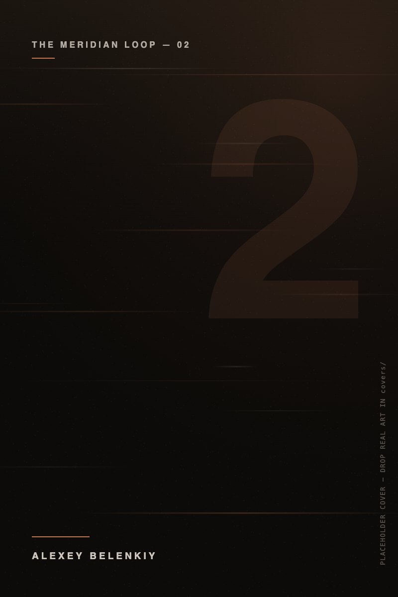

Прилив парадокса
Каждое исправление оставляет шрам.
Прошлое — заряженное оружие.

PLACEHOLDER — Лицензированный наблюдатель прошлого находит правку в собственной линии времени: день, переписанный, пока он стоял внутри него. Чтобы отменить исправление, ему придётся узнать, кому принадлежит история — и чего стоит быть свидетелем.